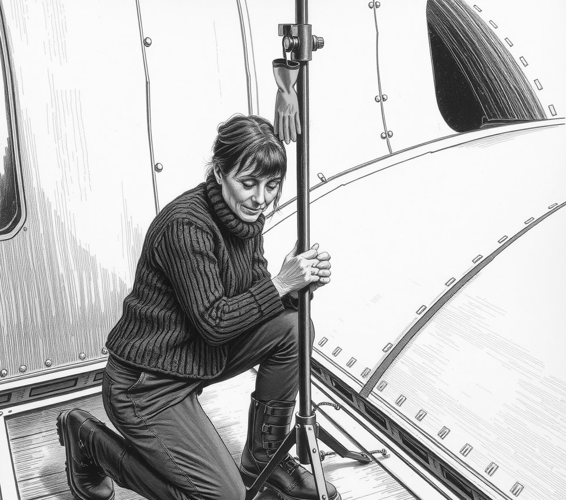

Deep-Lanthorn Nine . 2 November 5657

Seven members of the Osei family were admitted to the cold ward at Deep-Lanthorn Nine on Friday after being forced onto the unheated exterior hull for a matching-fleece holiday photo.
None wore pressure helmets.
Thandiwe Osei, who manages the waystation light-beacon, had spent three months weaving matching red garments for her children, grandchildren, and ninety-year-old mother. She insisted the living quarters were unsuitable for a proper portrait.
"The scrubber lamps make everyone look grey," Thandiwe said from her bunk, where both her feet were wrapped in blue heat-foam. "The starlight outside is far more flattering."
The family stood on the outer plating in deep vacuum for ninety seconds while Thandiwe adjusted the tripod legs. Her son-in-law lost two toes. Her mother's jaw froze mid-smile, requiring four hours under the warm lamps to unhook.
Nobody could scream.
Station medics confirmed that all seven family members are now stable, though three grandchildren cannot feel their ears.
The shutter froze shut before the sensor triggered, recording only a black frame and a burst of static.
Thandiwe remains undeterred by the injuries or the loss of the image.
"Next year we will use the solar array," she said, adjusting her drip line. "The contrast is much better."